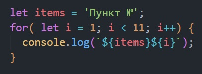
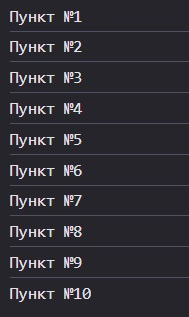
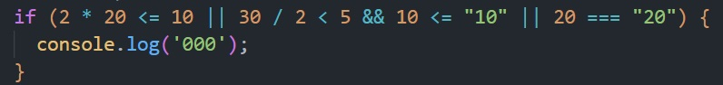
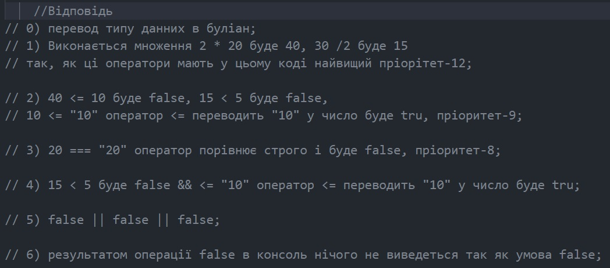
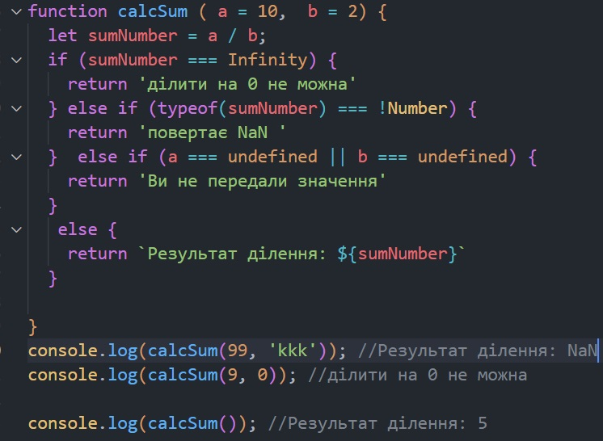
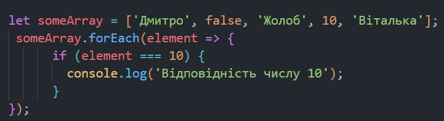

Урок №22 (Основи JavaScript. Частина №2)
-
Задача №1
Що потрапить в консоль?
- let someVar = 0;
- ++someVar;
- if (someVar) { console.log(someVar); }
Відповідь: результат в консолі буде 1; Ми оголосили зміну someVar зі значенням нуль. На наступному кроці ми виконуємо ++someVar тобто збыльшуємо нуль на 1, тому до змінної "someVar" додається одиничка за допомогою інкрименту ++. В конструкції if перевіряється someVar, якщо не дорівнює нулю, undefined, null, false, nan, порожньому рядку тоді умова виконується і дорівнює 1 -
Задача №2
За допомогою циклу FOR виведіть в консоль 10 рядків:
- 
 -
Задача №3
Що потрапить в консоль?
- 
 -
Задача №4
Створіть функцію, яка повертає результат ділення числа a на число b з додаванням рядка "Результат ділення: " Викличте функцію передаючі різні значення, у тому числі не передаючи зовсім. Функція не має повертати NaN, Infinite або помилку
 -
Задача №5
Створіть масив даних - 5 елементів, один з яких число 10 Обробіть масив за допомогою методу перебору Перевіряйте елемент на відповідність числу 10, та у разі відповідності, виводьте в консоль
